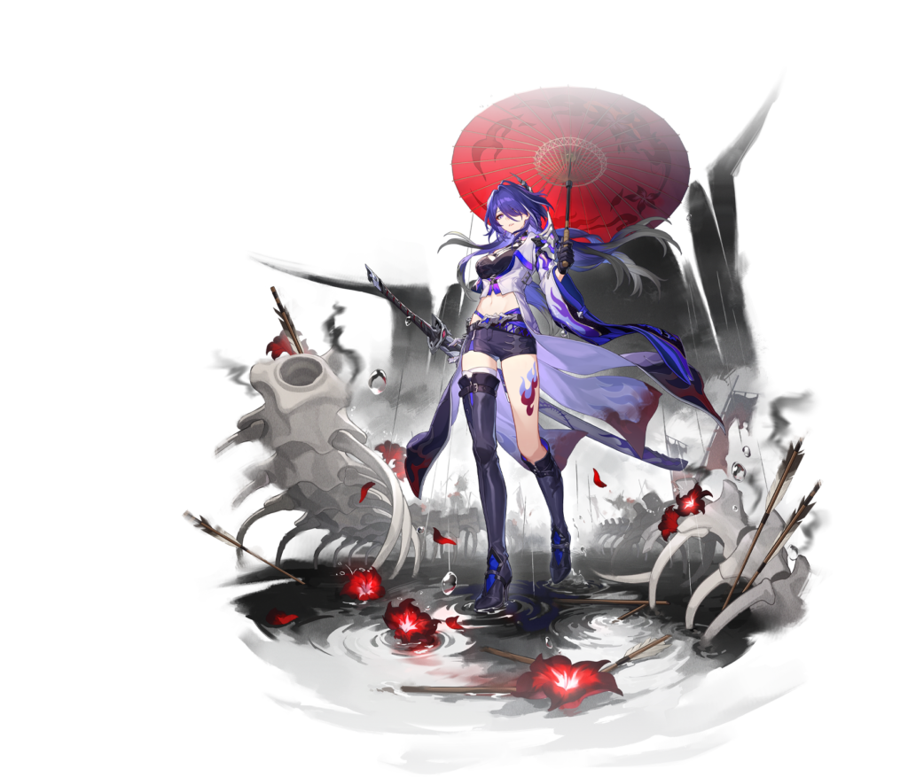

Acheron é uma personagem limitada de 5 estrelas, do elemento de Raio, que segue o caminho da Inexistência. Uma DPS focada em causar dano através de sua Perícia Suprema, com um kit totalmente ofensivo, que provê diversos bônus de dano. Ao contrário dos outros personagens voltados para DPS do jogo, Acheron possui uma sinergia muito maior com personagens do mesmo caminho que ela e com aqueles que aplicam efeitos negativos nos inimigos. Também conta com uma técnica que pode ser utilizada para derrotar grupos de inimigos, desde que não contenham chefes ou inimigos especiais, sem entrar em combate.
